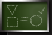

-
Análisis acústico completo
Análisis completo de los puntos claves de un espacio acústico por medio de software con informe detallado de las frecuencias problemáticas. Incluye productos de CRAcoustics.
-
Análisis acústico básico
Análisis completo por medio de software en los puntos clave que incluye los resultados, planos, y sugerencias del análisis.
-
Paneles para Absorción
Venta de paneles para absorción de bajo y medias mas conocidos como "trampas de bajo".
-
Paneles para Difusión
Venta de paneles para difusión tipo QRD para mantener un sonido "en vivo".
-
Paneles para Aislamiento
Venta de paneles para aislamiento de puertas, ventanas, cielo raso, pisos y paredes.
Ondas Estáticas
Prevenir ondas estáticas e interferencia acústica que puedan afectar la respuesta de frecuencias en estudios de grabación, salas de ensayo, "home theaters", o cualquier otro ambiente acústico.
Campaneo Modal
Reducir el campaneo modal de pequeños espacios y el tiempo de reflejo en estudios y espacios más grandes.
Absorción y Difusión
Absorción o difusión para prevenir campaneo, eco, y mejorar la imagen en estéreo.
Aislamiento
Para que los sonidos tanto de afuera como adentro no perjudiquen el ambiente, tal como camiones, autobuses etc.. que pueden penetrar al espacio acústico e interferir con micrófonos y viceversa.